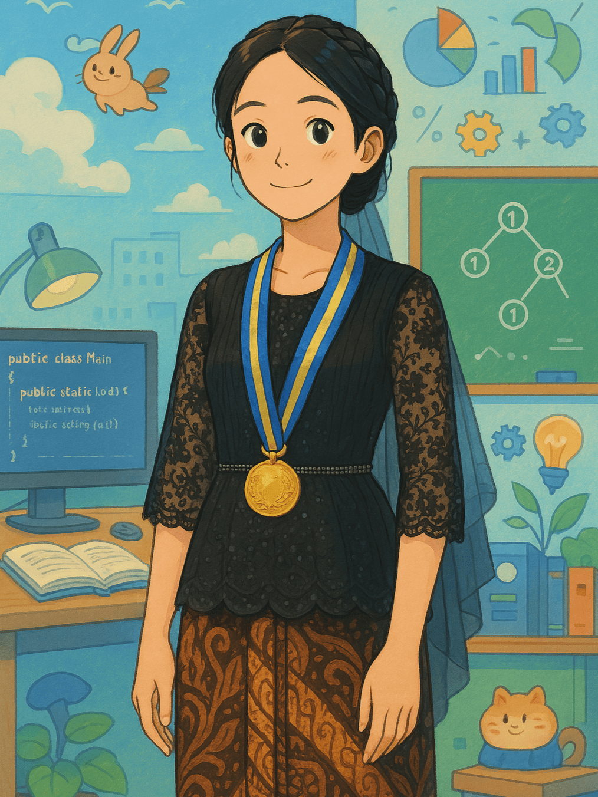

Setiap orang punya cerita, dan ini bagian ceritaku.
Dara Anggi Puspa
235314010
Halo, perkenalkan saya Dara, mahasiswa Informatika angkatan 2023 di Universitas Sanata Dharma. Selama perkuliahan, saya berusaha aktif dalam berbagai organisasi dan kegiatan di program studi saya. Pada semester dua, saya bergabung dengan Himpunan Mahasiswa Informatika sebagai anggota divisi Minat Bakat biro Pendidikan. Selain itu, saya juga terlibat dalam kepanitiaan Pekan Olahraga dan Seni Informatika (PORSI), khususnya di divisi pendaftaran. Berorganisasi dan mengikuti berbagai event menjadi pengalaman yang berharga bagi saya, karena tidak hanya menyenangkan, tetapi juga memperluas wawasan, membangun relasi, dan mengisi waktu dengan hal yang bermanfaat. Saat ini, saya ingin lebih fokus dalam mengembangkan keterampilan pemrograman untuk memperdalam pemahaman dan meningkatkan kemampuan saya di bidang ini.
Saya juga memiliki hobi mendengarkan musik. Musik bagi saya bukan hanya sekedar hiburan, tetapi juga menjadi bagian dari keseharian yang selalu menemani berbagai aktivitas. Saya mendengarkan musik hampir setiap saat ketika sedang bersantai, mengerjakan tugas, atau bahkan saat merasa bosan. Musik dapat membantu saya tetap fokus, meningkatkan suasana hati, dan memberikan kenyamanan di tengah kesibukan perkuliahan. Salah satu band favorit saya adalah LANY. Lagu-lagu mereka memiliki melodi yang menenangkan dan lirik yang sering kali relatable dengan berbagai situasi kehidupan. Musik mereka sering menjadi teman setia saya, baik saat mengerjakan tugas yang membutuhkan konsentrasi tinggi maupun ketika saya ingin melepas penat setelah seharian beraktivitas. Ada sesuatu dalam melodi dan lirik LANY yang selalu membuat saya merasa lebih rileks dan termotivasi.
Riwayat Pendidikan
| Tahun | Nama Sekolah | Alamat Sekolah |
|---|---|---|
| 2011 - 2017 | SDN 57/1 Muara Tembesi | Muara Tembesi, Batang Hari, Jambi |
| 2017 - 2020 | SMPN 6 Batanghari | Muara Tembesi, Batang Hari, Jambi |
| 2020 - 2023 | SMAN 1 Batanghari | Muara Bulian, Batang Hari, Jambi |
Kisah-Kisah Mengesankan dalam Hidupku
Keluarga
Teman Kuliah